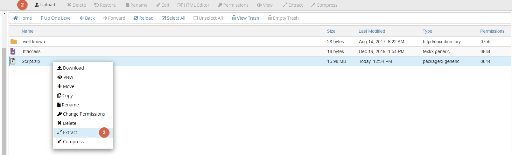
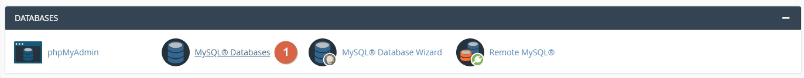
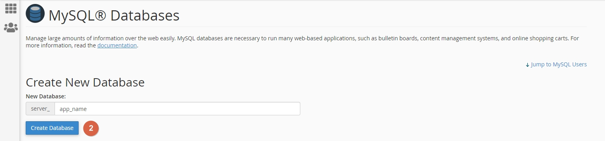
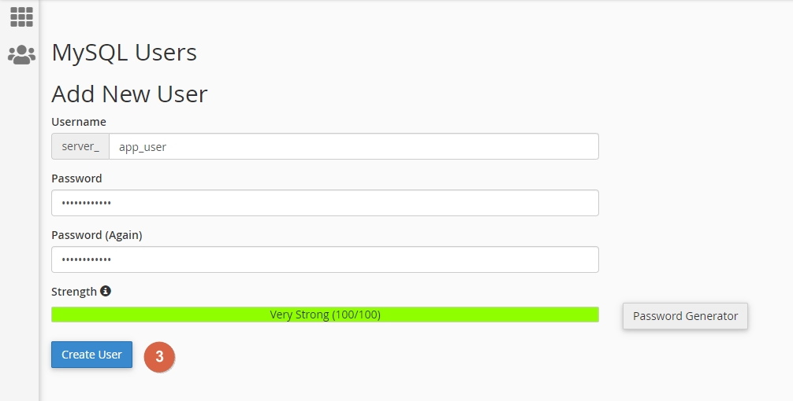
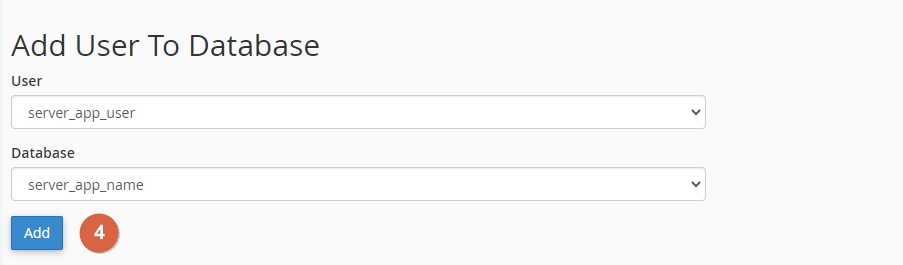
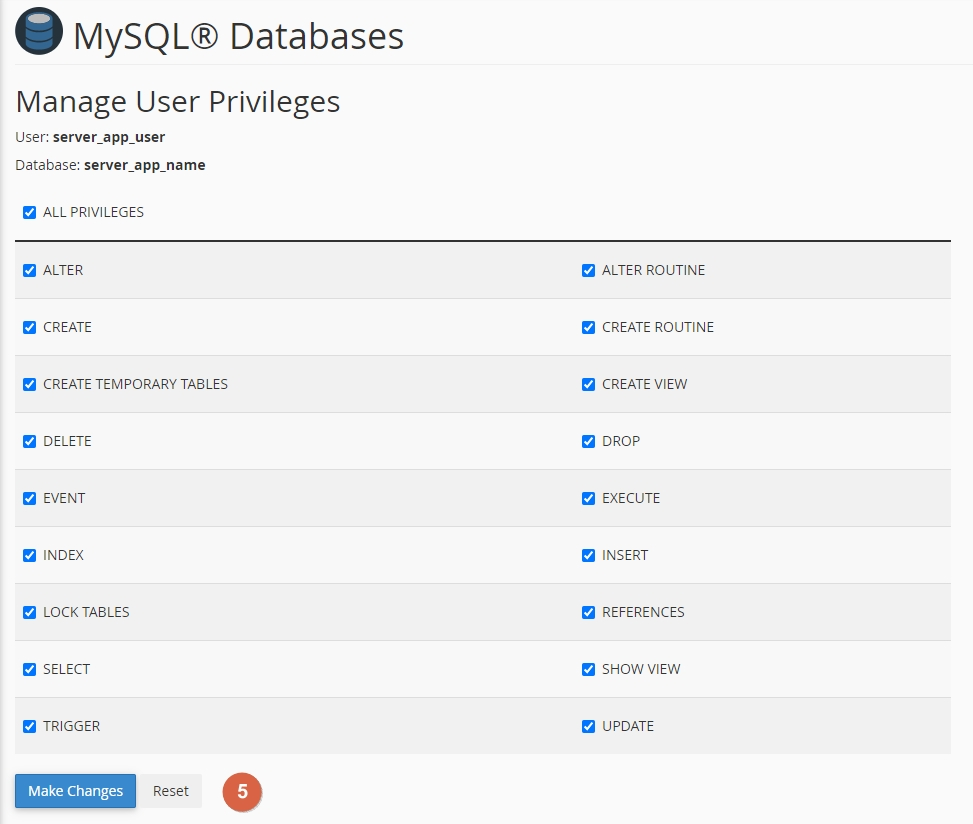

JustFans - Premium Content Creators SaaS platform
1. Introduction
Hey, thanks for purchasing "JustFans - Premium Content Creators SaaS platform". Here you'll find about everything you need in order to get started with launching your app. If you have any questions, don't hesitate do contact us.
2. Requirements
2.1.Webserver requirements
- Apache webserver with mod_rewrite, nginx or Litespeed
- Mysql 5.7.7+ or Mariadb 10.3.17+, and PHP-PDO (nd_pdo_mysql) driver
- PHP >= 8.0.2
2.2. PHP required extensions:
- BCMath
- Ctype
- Fileinfo
- JSON
- Mbstring
- OpenSSL
- PDO
- Tokenizer
- XML
- cURL
- exif
- GD
2.3. Other, optional requirements:
- FFMpeg (Optional, if not provided, only mp4 videos will be allowed)
- AWS S3 for files storage
- AWS CloudFront for secure assets access
- Stripe & Paypal seller accounts & API Keys
3. Files Setup
Before proceeding with the actual installation, we need to make sure that you unzip the script content onto the directory that is going to serve your domain. This can be either done via cPanel or command line.
3.1. Upload the script directory onto your server.
Locate the file manager and upload the Script folder onto your web serving directory. You can then even move the contents of the newly extracted Script folder onto the side main public directory, but make sure you also copy any hidden files.
3.2. Extract archive contents.
3.3. Configure files permissions
In order for the script to work properly, you will need to configure the right permissions some of the files & folders you've just extracted. Set the access permissions (CHMOD) to 755 for the following folders:
vendorstoragebootstrap
You can find more info on how to update access permissions, depending on your setup, at:
- cPanel - Update file or folder permissions
- Plesk - Setting File and Directory Access Permissions
- For CLI usage, you can use
chmod 755 filenamefor single filer orchmod -R 755 directoryfor setting access to a directory recursively.
3.4. Changing the public directory Important
Configure your web server's document / web root to point to the public directory of the software. For example, if you've uploaded the software in example.com folder, your web directory should be changed to example.com/public folder.
You can find more info an how to change your site Document root over at:
- cPanel - New document root
- Defining a Custom Document Root
- For custom servers / VPSs you will have to change your DocumentRoot out of the site's virtual host file.
If your hosting provider doesn't allow changing your DocumentRoot, you can temporarily rename the .htaccess.sample to .htaccess. Use this just as a temporary solution.
4. Database Setup
4.1. Create a new database
4.2. Create a new mysql user
4.3. Add the user to the database
 You can find additional info on how to create databases and users, depending on your setup over at:
5. Installing the script
The script comes with a ready to go web installer that you can access on the /install path, as in https://your-domain.com/install.
Once there, you should be able to see a panel like this, which will guide you through a simple, 3 steps installation process.

- 6.1. Checking requirements. If minimum requirements are not met, script will not be installable.
- 6.2. In this form, please enter the database host, name, user and password that you've created on step 3.
- 6.3. In this form you'll be able to set up site's name, your admin user and validate your script license.
Once you're done with the installation, you'll be able to customize the rest of your site's aspects via the admin panel.
6. Setting up the payments providers
In order to be able to receive payments, you'll need to set up at least one payment provider for your app.
Navigating to Admin > Settings > Payments area, you will be able fetch your site's webhook endpoints to be used with Paypal and Stripe, and fields to fill in their Secret & Public keys.
- Login into your Stripe dashboard.
- From the secondary sidebar, please go to Developers > API Keys.
- Copy the
Publishable keyandSecret keyin the admin panel, over atAdmin > Settings > Payments > Processors > Stripe. - Next up, from the Developers tab, go to Webhooks and click on
Add endpoint - For the
Endpoint URL, please copy the webhook endpoint located atAdmin > Settings > Payments > Processors > Stripe.. - For the
Versionfield, select the latest version. - Then, for the
Select events to listen to, go with theSelect all events. - Once done with creating the webhook, you will get a Webhook secret, which will need to be added in the
Admin > Settings > Payments > Stripe Webhooks Secretfield. -
Enable OXXO with Stripe
- In order to enable OXXO with Stripe you must finish the previous steps first.
- Login into your Stripe account and search for
Payment methods. Enable OXXO as a payment provider - Then you can enable Oxxo from admin panel settings: Settings > Payments > Payment Processors > Stripe
- In the end you need to update the webhook created in a previous step to listen for two new events:
checkout.session.async_payment_succeeded / checkout.session.async_payment_failed
-
Enable iDEAL, Blik, Bancontact, EPS, Giropay and Przelewy24 with Stripe
- In order to enable one of the built-in payment providers in Stripe checkout you must finish the previous steps first and have the website currency code set accordingly. (enabling OXXO is optional)
- Login into your Stripe account and search for
Payment methodsand enable one of the payment providers. - Then you can enable it from admin panel settings:
Settings > Payments > Payment Processors > Stripeso they will be shown on the Stripe checkout page
- Login into your Paypal account, using the Paypal developer dasboard.
- Go to the My apps & credentials area, select the
Liveswitch button and then hitCreate appbutton to create a Paypal app. - Copy the Paypal's
ClientID& PaypalSecret Keyand add them into the admin into the Settings > Payments area. - Go to the My apps & credentials area, select the
Liveswitch button and then select your freshly created app. - Scroll down the page until you reach the
Production Webhooksarea, where you'll need to click on theAdd Webhookbutton. - On the Webhook URL field paste your webhook URL. This can be found, as shown in the first screenshoot, over at
Admin > Settings > Payments. - For the
Event types, selectAll Eventsand hitSave
- Login into your Coinbase Commerce account, using coinbase commerce sign in.
- Go to Settings section.
- Search for API keys
- Click on Create an API key, copy the key and add it into the admin panel into Setting > Payments area.
- Search for Webhook subscriptions
- Click on Add an endpoint. The webhook url can be found over at
Admin > Settings > Paymentssection. - Then, click on Show shared secret and add that secret into the admin panel, over at
Admin > Settings > Payments
- Login into your NowPayments account, using NowPayments sign in.
- Go to Store settings section.
- Add a new API Key
- Copy the key and add it into the admin panel into Setting > Payments area as
NowPayments Api Key. - Go back to your NowPayments account over Store settings and generate an
IPN secret key - Add secret into the admin panel, over at
Admin > Settings > PaymentsasNowPayments IPN Secret Key - The next step is to add crypto wallets into your NowPayments account.
- We recommend adding as many wallets as possible with different crypto currencies so the conversion rate will be lower.
-
We recommend adding a payment covering percentage into your NowPayments account representing percentage of the payment that needs to be paid to be considered completed.
Example: If set to 5%, an item priced at $100 will be considered fully paid for if the customer transfers cryptocurrency worth 95$.
- In some instances IPN Callback URL is required in order to be able to configure the application on their side. The IPN Callback URL can be found in the admin panel over at
Admin > Settings > Payments > NowPaymentsasWebhook URL
- Login into your CCBill account, using CCBill sign in.
- Go to FlexForms Systems and check for Flex ID.
- Copy the Flex ID and add it into the admin panel over at
Settings > Payments > Payment processors > CCBill > CCBill FlexForm Id. - Add your
CCBill Account Numberover admin settings. - Login into your CCBill one time payments sub account and go to
Account Info > Sub Account Admin - Under left navigation go to
Basicand set your approval & denial URL's by getting them from the admin panel over atAdmin > Settings > Paymentssection - Then select
Webhooksfrom the left navigation and add your webhook (choose JSON as Webhook Format). You can find the CCBill Webhook URL over the admin settings section. - Add your sub account number for one time payments into the admin panel, over at
Settings > Payments > Payment Processors > CCBill > CCBill SubAccount One Time Payments - Repeat the above steps for your sub account for recurring payments.
- The last step is to ask CCBill about your
Salt keyand fill that into the admin panel. - In order to be able to programmatically cancel CCBill subscriptions you need to set up a DataLink API user.
- Login into your CCBill recurring payments sub account and from the top navigation go to
Account info > DataLink Services Suite - From the left navigation click on
Add userand fill in the username and password. - For
Subsystemtick on all the checkboxes then add your VPC ip address on theValid Ipsfield - Click on store user and add the accounts details into the admin panel, over at
Settings > Payments > Payment processors > CCBillasCCBill DataLink Username / Password
- Login into your Paystack account, using paystack sign in.
- Go to Settings section.
- Check API Keys & Webhooks tab
- Copy the
Secret keyand add it into the admin panel into Setting > Payments > Payment processors > Paystack. - Go into the admin panel and copy
Webook & CallbackURL's and add them into Paystack
- Login into your MercadoPago developer account, using mercado sign in.
- Go to your applications.
- Click on Create application
- Choose a name for your application
- For
What type of payment solution will you integrate?selectOnline payments - For
Are you using an e-commerce platform?selectNo - For
Which product are you integrating?selectCheckoutPro - Integration model is optional so you can leave as empty
- After you successfully created the application go to the
Production credentialssection, copy theAccess Tokenand add it into the admin panel into Setting > Payments > Payment processors > Mercado.
6.1 Withdrawals with Stripe Connect
- If you haven't already, create a Stripe account and add all required details.
- Log in to your Stripe account and navigate to the Stripe Dashboard
- Go to the Connect settings and enable Stripe Connect by agreeing to the terms and conditions
- In the Stripe Dashboard, navigate to Settings > Connect settings.
- Stripe Connect will be responsible for onboarding your customers so you must set up your branding, including logos and colors, to customize the onboarding experience.
-
Go to the Payout settings page and set the following:
-
External accounts tab
- Require at least one bank account? -> Up to you but we recommend to set it to
yes - Allow debit cards? -> Up to you
- Over
Stripe-hosted onboarding for Custom accounts sectionsetCollect external account information for Custom accountstoyes
-
Payout schedules tab
- Disable
Allow accounts to manage their payout schedulebecause we create the payouts manually
-
Alternative currency payouts tab
- Enable
Enable accounts to receive payouts in alternative currenciesso people with bank accounts added on their connected accounts having another currency than the one you use for your Stripe account will still be able to receive money
- Require at least one bank account? -> Up to you but we recommend to set it to
-
In the end you'll need to set up a new webhook endpoint for Stripe Connect to work properly. Go to the Developers > Webhooks page and set the following:
- Endpoint URL: Can be found in the admin panel over at
Settings > Payments > Withdrawalsin the top section asWebhook URL - Listen to:
Events on Connected accounts - Events to listen:
account.updated, payout.canceled, payout.failed, payout.paid - Click on
Add endpoint
Signing secretinto the admin panel over atSettings > Payments > Withdrawals > Stripe Connect Webhooks Secret - Endpoint URL: Can be found in the admin panel over at
- You can now enable Stripe Connect from the admin panel by enabling the
Enable Stripe Connect for withdrawalssetting
7. Setting up the cron jobs Important
7.1 Crons setup
In order to get the platform fully functional, including the payment system, emails, offers and more, you will need to set up the following cronjob.
* * * * * cd /path-to-your-project && php artisan schedule:run >> /dev/null 2>&1
Some custom web-hosting panels might require the cron task to be set in a different manner. If needed, you could also run the task with absolute paths (or different PHP versions), like this:
* * * * * php /path-to-your-project/artisan schedule:run >> /dev/null 2>&1
7.1 Ensure crons are running
Crons plays an important role in the payment system so please ensure the crons are not returning any fatal error when running them (eg:cd /path-to-your-project && php artisan schedule:run). You can also make sure there are no errors under the crons log file @ storage/logs/cronjobs.log.
You can find more info an how to set up crons over at:
- cPanel - Add a cron job
- Plesk - Scheduling Tasks
- For VPS servers, you will need to add that line into your
/etc/crontabfile. Based on distribution settings, you might need to include the user as well.
8. Setting up the emailing driver
For the mailing driver you can mainly choose between three main options, which are Mailgun via API, SMTP or PHP mail() function, if available. You also have the logging option, in case you're just debugging things.
The emailing settings can be found over at Admin > Settings > Emails. Here's a short description over the settings.
- Mail from name - Name in which the emails are sent, also attached to email footers.
- Mail from address - Email address sending from. EG: no-reply@domain.com
8.1 Log driver
The logging driver has mainly debugging purposes. Logged emails can be found under the storage/logs/laravel.log log file.
8.1 Sendmail driver
The sendmail driver can be used if the PHP mail() function is configured on the server. Most of cPanel shared hosting providers has it enabled.
8.3 Mailgun driver
- Mailgun domain - The domain/subdomain you've set up to use with mailgun. Must have valid DNS records set up priorly.
- Mailgun secret - The domain API key
- Mailgun endpoint -
api.mailgun.netfor US orapi.eu.mailgun.netfor EU instances
8.4 SMTP driver
- SMTP Host - Your SMTP server host name / IP.
- SMTP Port - Generally
587for TLS and465for SSL. Can be different based on the email provider. - SMTP Encryption - TLS / SSL
- SMTP Username - Your SMTP username
- SMTP Password - Your SMTP password
Notes
- To test if emails are properly set up, you can create a new account, if misconfigured, you will get a 500 error, while the account should still be created.
- Generally all drivers are good if running properly, but mailgun API seems to be the fastest.
9. Setting up storage driver
9.1 Setting up AWS S3 hosting & CloudFront
If you dont want to use your server as hosting for your application files you have the option to use AWS S3 (including CloudFront and CloudFront Signed Url's) which is more faster and secure.
S3:To upload your data to Amazon S3, you must first create an Amazon S3 bucket in one of the AWS Regions.
- Go to AWS Console and login or create an account.
- After you successfully login into your account go to Search for services area and search for S3.
- Next up, you should be redirected to S3 page, click on
Buckets > Create bucket. - Set up your bucket
nameandregion. - Enable
Make public using ACLoption. - Disable
Block all public accesscheckbox. - Enable
I acknowledge that the current settings might result in this bucket and the objects within becoming publiccheckbox. - The other options stay as default.
- Click on Create bucket after you make sure all the details are correct.
- After you successfully create the bucket, you need to generate the AWS access keys by going again to Search for services area and search for IAM (Identity and Access Management).
- Next up, go to
Access management > Usersand click on Add users. - Set an
usernameunder user details area and enableProvide user access to the AWS Management Console - optional. - Under Set permissions area, click on
Attach policies directlyand then search forAmazonS3FullAccessand enable this policy (or you can add a custom policy) then click Next. - Review the settings, add a tag if you want or leave it default, and then click on Create user.
- After the user is created, click on the user name in the list to open the user details.
- Under Security credentials, click on Create access key.
- In the Create access key dialog, choose the option that best fits your needs and click Create access key.
- Make sure you save the AWS
Access Key IDandSecret access keysecurely as you won't be able to view the secret access key again after this dialog. - Save
bucket name,AWS Access Key IDandAWS Secret access keyto the admin panel, over atAdmin > Settings > Storage.
When you want to use CloudFront to distribute your content, you create a distribution and choose the configuration settings you want.
- Follow steps from S3 section from above to create bucket.
- Go to Search for services area and search for CloudFront.
- Next up, you should be redirected to CloudFront page, click on
Distributions > Create distribution. - Set your bucket origin under
Origin > Origin Domainarea by searching for previously created bucket. - The other options can stay as default as long as you don't want something custom.
- After you successfully create distribution, save
Distribution domain nameto the admin panel, over atAdmin > Settings > Storage > Aws CloudFront Domain Name(remove https:// part from the domain name) and enable CloudFront. - Check Steps for Creating a Distribution for more details about how to create and setup a CloudFront distribution.
To use signed URLs, you need a signer. A signer is a trusted key group that you create in CloudFront.
-
Create a key pair for a trusted key group:
- Run
openssl genrsa -out private_key.pem 2048command to generate the private key. - Use the following command
openssl rsa -pubout -in private_key.pem -out public_key.pemto extract the public key from the file namedprivate_key.pem.
The following steps use OpenSSL as an example of one way to create a key pair. There are many other ways to create an RSA key pair. - Run
-
To upload the public key to CloudFront:
- Sign in to the AWS Management Console and open the CloudFront console.
- In the navigation menu, choose
Key management > Public keys > Create public key. - For
Name, type a name to identify the public key. - For
Key, paste the public key. If you followed the steps in the preceding procedure, the public key is in the file namedpublic_key.pem. - Use the cat command on the macOS or Linux command line, like this:
cat public_key.pem. Copy the output of that command, then paste it into the Key value field. - Open the
public_key.pemfile with a plaintext editor like Notepad (on Windows) or TextEdit (on macOS). Copy the contents of the file, then paste it into the Key value field. - Click add and copy the public key ID. You use it later when you create signed URLs, as the value of the
Key-Pair-Idfield. (this is also the Aws CloudFront Key Pair Id that must be set in admin panel)
To copy and paste the contents of the public key, you can: -
To add the public key to a key group:
- In the navigation menu, choose
Key management > Key groups > Create key group. - For
Name, type a name to identify the key group. - For
Public keys, select the public key to add to the key group, then choose Add. - Choose Create key group.
- In the navigation menu, choose
-
Adding a signer to a distribution:
- Record the key group ID of the key group that you want to use as a trusted signer.
- Open CloudFront console and choose the distribution whose files you want to protect with signed URLs or signed cookies.
- Choose the Behaviors tab.
- Select the cache behavior whose path pattern matches the files that you want to protect with signed URLs or signed cookies, and then choose Edit.
- For Restrict Viewer Access (Use Signed URLs or Signed Cookies), choose Yes.
- For Trusted Key Groups or Trusted Signer, choose Trusted Key Groups.
- For Trusted Key Groups, choose the key group to add, and then choose Add. Repeat if you want to add more than one key group.
- Choose Save changes to update the cache behavior.
- Save previously created public
Key-Pair-Idto the admin panel, over atAdmin > Settings > Storage > Aws CloudFront Key Pair Id. -
Copy previously created private key pair RSA file into project root by following steps:
- Copy
private_key.pemfile intoproject root. - Add private key file path to the admin panel, over at
Admin > Settings > Storageand enable CloudFront Signed Url's. (If you followed previously steps this path should look like thisprivate_key.pem)
- Copy
- Make sure your S3 bucket permissions are set to public.
- Check Serving private content with signed URLs for more details about CloudFront Signed Url's.
9.2 Setting up Wasabi storage driver
If you like to use Wasabi instead of S3 for file storage, that can be set by changing the storage driver, out of the Admin > Settings > Storage > Driver.
Once you've done that, you wil have to add your credentials which are available over the Wasabi website. Please make sure you account is validated, so buckets can be available to the public.
You will also need to add the following policy to your bucket:
{
"Version": "2012-10-17",
"Statement": [
{
"Sid": "AllowPublicRead",
"Effect": "Allow",
"Action": "s3:GetObject",
"Resource": [
"arn:aws:s3:::your-bucket-name",
"arn:aws:s3:::your-bucket-name/*"
]
}
]
}
Note, that the Wasabi bucket can not have any dots inside it.
9.3 Setting up Digital Ocean Spaces storage driver
If you like to use Digital Ocean Spaces storage, that can be set by changing the storage driver, out of the Admin > Settings > Storage > Driver. Once you selected the new driver, proceed with the following steps:
- Create a new Spaces access key and copy the key and secret.
- Go to
Admin > Settings > Storageand add your newly created keys into theDO Access KeyandDO Secret Key - Go to Spaces area and create a new space. Default settings should be just fine.
- Select the new bucket. You will then see a link of this format
https://{bucket-name}.{region}.digitaloceanspaces.com - For the
DO Bucket, insert the{bucket-name}url section. - For the
DO Region, insert the{region}url section.
9.4 Setting up Minio storage driver
Once you got your minio instance ready, you can then proceed with changing the storage driver, out of the Admin > Settings > Storage > Driver. Once you selected the new driver, proceed with the following steps:
- Create a new set of keys and copy the key and secret.
- Go to
Admin > Settings > Storageand add your newly created keys into theMinio Access KeyandMinio Secret Key - Create a new bucket and fill in the
Admin > Settings > Storage > Minio bucketFor theMinio Bucketfield. - For the
Admin > Settings > Storage > Minio Region, insert the region your instance is using. - For the
Admin > Settings > Storage > Minio Endpoint, insert the endpoint your instance is using.
9.5 Setting up PushrCDN storage
Once you got a pushrcdn account, you can then proceed with changing the storage driver, out of the Admin > Settings > Storage > Driver. Once you selected the new driver, proceed with the following steps:
- Go go the CDN page and create a new
Push zone - Set a zone label, and for
Sonic Storage Typeset theAWS S3-compatible. - Select the new zone you've created and then click on
Storage and Hostnamesarea. - Fill in the pushr storage admin setting fields with the
keys,bucketname,S3 endpointandCDN Hostnamevalues.
10. Setting up Websockets
10.1 Pusher websockets
In order give the app realtime capabilities, used for User messenger & User notifications you will need a Pusher account. Once you got that, follow the steps below:
- Go to Pusher dashboard and go to the Channels category.
- Click on
Create app. Select anameandcluster regionat your preference. - Next up, you should be redirected to your new app page. If not, head over Apps and select your app.
- Copy over the
app_id,key,secretandclusterand add save them to the admin panel, over atAdmin > Settings > Websocketsarea.
10.1 Soketi websockets
If you would like to go for a self-hosted solution, then Soketi is also available.
In order to set it up, change the Websockets driver to Soketi and add your configured Host, Port, App id, App key and App secret.
If your soketi instance is running on TSL, enable the Use TSL for Soketi toggle and use 443 port.
11. Setting up FFMpeg
In order to allow your users to upload all types of video formats, you will need to install FFMPEG on your server, if it doesn't have it already. If FFMPEG is not available, the allowed video extensions will fallback to .mp4 only.
Alternatively, if FFMpeg is not available for your server or you just don't want to use it, you can also use remote video transcoding, using coconut, but at additional costs.
11.1 FFMPEG on shared hosting
There are numerous shared hosting providers offering FFMPEG available hosting. Please check with your provider if FFMPEG is available.
11.2 Installing FFMPEG on Windows
In order to run FFMPEG on windows, head over this github page, download the latest win64 build and unzip it on your drive. Make sure FFMPEG is running under the same drive as the web server.
11.3 Installing FFMPEG on Ubuntu
sudo apt update sudo apt install ffmpeg
11.4 Installing FFMPEG on Rhel/Centos
Before proceeding with the installation, we'll need to set up some missing repositories, based on the OS version.
Centos 6$ sudo yum install https://dl.fedoraproject.org/pub/epel/epel-release-latest-8.noarch.rpm $ sudo yum install https://download1.rpmfusion.org/free/el/rpmfusion-free-release-8.noarch.rpm https://download1.rpmfusion.org/nonfree/el/rpmfusion-nonfree-release-8.noarch.rpm $ sudo yum install http://rpmfind.net/linux/centos/8-stream/PowerTools/x86_64/os/Packages/SDL2-2.0.10-2.el8.x86_64.rpmCentos 7
$ sudo rpm --import http://li.nux.ro/download/nux/RPM-GPG-KEY-nux.ro $ sudo rpm -Uvh http://li.nux.ro/download/nux/dextop/el7/x86_64/nux-dextop-release-0-5.el7.nux.noarch.rpmCentos 8
$ sudo dnf install https://dl.fedoraproject.org/pub/epel/ $ sudo dnf install https://download1.rpmfusion.org/free/el/rpmfusion-free-release-8.noarch.rpm $ sudo yum-config-manager --enable powertools $ sudo dnf install ffmpeg ffmpeg-devel
After the repos were added, continue with the installation by running the following command:
sudo yum install ffmpeg ffmpeg-devel
11.5 Adding the FFMPEG path to the admin
Copy the (full path) of the bin/ffmpeg and bin/ffprobe executables and copy them over the admin panel, at Admin > Settings > Media.
You can also test your FFMPEG set up & get full executables paths by running the following commands
ffmpeg -version # To test installation which ffmpeg && which ffprobe # To get full exec paths
12. Live streaming
In order to get going with live streaming configuration, you will need to create a PushrCDN account. Once logged in, you will need to verify your account by:- Fill in your personal information
- Fill in your payments info
- Go to
Media Platform > Go LiveFill in the required verification info
- Go to CDN > Push zones > Create push zone
- Copy the CDN Push zone ID and add it to
Admin > Streaming > Pushr Zone Idfield - Copy the Profile > Personal information > API Key, out of this page and add it to
Admin > Streaming > Pushr Keyfield. - For the
Admin > Streaming > Pushr Encoder, please use one of the available encoders (eu, us, sg)
Once you filled in your PushrCDN Zone ID & API Key, your platform then should support live streaming. Out of the admin panel, you can also set your other settings, like VODs, encoders or bitrates.
13. Google reCAPTCHA
In order to enable Google reCAPTCHA for public forms (like register page, contact page, etc), you will need to:
- You can get your API Keys from this link.
- Create a new app and use
reCAPTCHA v2 > "I'm not a robot" Checkboxtype of keys. - Copy your
Site KeyandKey secretand add them into theAdmin > Settings > Security > Recaptchafields.
15. GEO-Blocking
The GEO-Blocking feature can be enabled via the Admin > Settings > Security area, where you can enable or disable the feature globally using the Allow users to be able to geoblock their profiles switch.
The other setting you need to fill in is the IP geolocation API key (Abstract API). You can get your geo location API key by registering an account over at Abstract API and get your key over this link IP geolocation API.
16. OpenAI
The AI-suggestions feature can be enabled via the Admin > Settings > AI area, where you can enable or disable the feature, which can offer OpenAI based suggestions for users posts and bio descriptions.
The other setting you need to fill in is the OpenAI Api Key, alongside other prediction settings. You can get your API key by registering an account over at Open-AI site and get your key over this link OpenAI API Keys.
17. Localization
In order to translate your site in any language, you will need to make a copy of the default en.json language file found in lang folder, and change it according to your needs.
- The json language file must follow iso format, eg: es.json, ro.json, en.json.
- If you need to overwrite the validation rules messages or other libraries, the
enfolder can be copied and renamed to the new language code.
intl extension available will improve the localization experience and avoid issues with custom, un-common languages.
18. Coconut videos transcoding
If you want to use a remote videos transcoding you can set up coconut.co, as an alternative to FFMpeg. In order to get started, you will need to:- Go to coconut.com and register an account
- Go to the API section and get yourself an API key
- Go to
Admin > Settings > Videos > Coconutand add your API key - Configure the rest of the encoding options according to your needs
Before publishing your site, make sure video conversions are working as expected. Transcoded videos results can also be previewed on coconut's dashboard.
19. Admin panel
19.1 General info & how to add new users
If everything went fine, the Admin panel will be available at http://your-domain.com/admin. The credentials are set during the installation / user creation.
Once you got your main admin account set up, you can then manage your roles and other admins users from the admin panel itself.
If for some reason you lost access to the account, you can either reset the password of the user or create another and make it an admin using following command or SQL query:
php artisan voyager:admin your@email.comUPDATE users SET `role_id` = 1 WHERE `email` = 'your@email.com'
19.2 Available admin settings
Over the Admin > Settings area, you can view and manage your website content and customize different aspects of it. Here's a quick description of the main settings available in the admin area.
- Dashboard - View quick info about your platform
- Media manager - Browse and manage all site's media
- Users management - Browse and manage all users and their associated data
- Process users identity checks based on uploaded IDs
- Manage user roles
- Manage user wallets
- Manage user notifications
- Manage user messages
- Manage user reactions
- Manage user lists
- Manage user lists members
- Manage user reports
- Manage homepage featured users
- Posts management - Browse and manage all posts and their associated data
- Manage post attachments
- Manage post comments
- Manage post bookmarks
- Money management - View and manage subscriptions and payments related data
- Manage subscriptions
- Manage transactions
- Manage withdrawals
- Taxes - Manage taxes, countries and regions
- Pages - Create and manage public pages
- Settings - Change a wide variety of site settings
- Site settings
- Site title
- Site description
- Google Analytics Tracking ID
- Light site logo
- Dark site logo
- Site favicon
- Enable cookies box
- Allow (users to) switch to dark mode
- Allow (users to) change site direction (RTL-LTR)
- Allow (users to) switch languages
- Default site language
- Hide identity checks menu - Either show or hide the "Verify" setting category for users
- Enforce User Identity Check - If set to on, users will be required to complete an identity check upon posting content.
- Allow PWA Installs
- Allow QR code generate on profiles
- Allow gender pronouns
- Enable email 2FA on logins
- Default 2FA setting on user register
- Default profile type on user register
- Default user privacy setting on user register
- Enforce platform SSL usage
- Admin settings
- Admin Title
- Admin Description
- Admin Loading spinner image
- Admin Icon Image
- Admin Background Image
- Feed settings
- Posts per page
- Suggestion box total cards
- Suggestion box cards per page
- Autoplay suggestions box slides
- Disable right click on media & view page source
- Allow post galleries Zoom in
- Media settings (See 7.4. Setting up FFMpeg)
- FFMpeg Path
- FFProbe Path
- Allowed file extensions
- Max file uploads size (MB)
Do not exceed PHP limits - Max videos length (In seconds)
- Apply watermark over uploaded assets
- Watermark image
- Use profile url watermark - Adds user site profile url as a wattermark
- Websockets settings (See 7.3. Setting up sockets)
- Invoices settings - Set payment receiver invoice details & Invoices Prefix
- Payments settings (See 7.1. Setting up the payment )
- View stripe & paypal & coinbase webhooks links
- NowPayments API Key (If not provided, NowPayments payments are disabled)
- NowPayments IPN Secret (If not provided, NowPayments payments are not working properly)
- Coinbase API Key (If not provided, Coinbase payments are disabled)
- Coinbase Webhooks Secret
- Stripe Public Key (If not provided, Stripe payments are disabled)
- Stripe Secret Key (If not provided, Stripe payments are disabled)
- Stripe Webhooks Secret
- Paypal Client Id
- Paypal Secret (If not provided, Paypal payments are disabled)
- Paypal Secret (If not provided, Paypal payments are disabled)
- Paypal Live Mode ( Must be enabled to receive payments, otherwise, sandbox environment will be used.
- Site Currency Code
- Site Currency Symbol
- Emails settings
- Email driver - Choose between Log/SMTP/Mailgun. We recommend mailgun via API.
- Mail from name
- Mail from address
- Additionally, each email driver comes with it's configuration fields that must be filled in properly.
- Storage settings (See 7.2. Setting up AWS & CF for advanced configs)
- Storage driver (Choose between locally hosted files, S3, Wasabi or DO SPaces ones)
- Social login
- Set your social login clientIDs & secrets for Facebook, Twitter & Google.
- Social links
- Set your social links footer links.
- Withdrawals and Deposit
- Set your deposit and withdrawal minimum and maximum constrains.
- Custom Code / Ads
- Sidebar Ad - Ad to show in feed & profile right sidebars.
- Custom CSS Code - Custom code to inject in the platform
- Custom JS Code - Custom code to inject in the platform
- For the email driver, we recommend going with the mailgun API Key based method, not the SMTP one, which can slow down the request time.
- For the assets hosting, we strongly recommend using AWS S3 & CloudFront with Presigned URLs. This is the only way you can protect your users assets, meaning the images and video links are served via CloudFront and links are temporary & IP locked.
20. How to update
- Make a backup of the
.envconfig file located on your server. - Upload and replace all the files on your server with what's inside the
Scriptfolder. - Restore your
.envconfig file on your server. - Go to
https://example.com/updateand follow the update wizard.1
- Updates that do not have database changes, will not show up in the update wizard.
21. FAQ
-
I have a support inquiry, a question or a problem, how can I contact you?You can contact us by sending us a private message over our Codecanyon profile.
-
What hosting do you recommend?We recommend using DigitalOcean, as they offer great performance and flexibility at an affordable price.
-
Is installation included in the price?No, installation is not included. We offer installation services for an extra fee, for which you can send us a message.
-
My website returns a Not Found message, why?Please ensure that you have
mod_rewriteenabled on your server. -
I have uploaded my files but getting 500 error. Why?This usually happens when uploading the script files via FTP, while your operating system is skipping the hidden files, including the
.envfile. You can either re-upload that file and the rest of such files, like the.htaccessfiles, or the .zip file onto the server and extract it there.This can also happen when moving files around using Cpanel's file manager. Make sure to go toSettings > Preferencesand checkShow hidden Files (dotfiles), so hidden will also be selectable.Another reason for which you might get a 500 error on the installation step is missing PHP extension. Thestorage/logs/laravel.logfile can be checked to get the exact extension/reason. -
How can I edit my homepage?
Generally, for each page, including homepage, you will have a skeleton like this one:
- Controllers are found in the app/Http/Controllers directory
- resources/views/page.blade.php view file (for HTML)
- public/js/pages/page.js (For Javascript changes)
- public/css/pages/page.css (For CSS changes)
So for the homepage, you would have
home.css, home.js, home.blade.php, etc. However, you will have to back up and replace your updated files after each update you do on the instance. For the footer, you would have to edit theresources/views/template/footer.blade.phpfile. -
How can I change the PWA app icons?
In order to change your PWA app icon and splash screen assets, you will need to replace the existing ones within the
public/img/pwafolder.Usually, after replacing the assets, the browser cache must be cleaned in order to see the new icon and splash screen in action.
-
How can update my custom modified version of the script?
Our recommendation regarding maintaining custom modified version of the platform is the following:
- Create your own (private) repository
- Host your custom code changes on a separate branch
- Update the main branch with the new update
- Merge the updated version onto your branch (resolve any conflicts if that’s the case)
- Release your (custom) updated version of the script
- Update the platform, as per How to update section
-
Assets are not uploaded or shown on local storage, why?First off check if the
Admin > Settings > Site urlfield is containing an invalid value. Secondly, you can check if the storage symlink is created properly. If not, please re-create it yourself using the following CLI commands:-
rm -rf public/storage -
ln -s storage/app/public public/storage
-
-
Site throwing 500 error after changing file storage driver, why?This generally happens when the storage driver credentials or configurations are wrong. If you can't access the admin panel either, you can reset the storage driver by running this query in phpMyAdmin or your DB client
UPDATE `settings` SET `value`='public' WHERE `id`=95;. -
I am having issues with uploading large files, what can I do?This is generally a issue with the server/web-server/PHP settings. The following settings can used to increase/bypass max upload limits:
Admin > Settings > Media > Max file uploads sizeAdmin > Settings > Media > Chunked uploads
If still having issues, these PHP settings can be adjusted to desired values, but other server/web-server/firewall settings might affect as well. -
I am having issues with ffmpeg encoded videos, why?This is generally a issue with the server/web-server/FFMpeg build. The issues can be different, from encoder related issues to memory related ones. Generally, the error of the last encoded video can be found over the
storage/logs/ffmpeg.logfile. That usually should contain the real reason of the failure.If the error is (audio) encoder or memory related, the following options might help:Admin > Settings > Media > FFMpeg video conversion quality presetAdmin > Settings > Media > FFMPEG Audio encoder
If the error persists, you might have to adjust server settings or the available ffmpeg build. -
How do I test payments on the demo website?Depending on the payment provider you want to use you can use the following credentials:
- Stripe:
Card No: 4242 4242 4242 4242
Date: any future date
CVC: 123 - PayPal:
Email: sb-mzdi86428457@business.example.com
Password: Dz1d_EP/ - CCBill:
VISA - 4111111111111111
MasterCard - 5105105105105100
Discover - 6011111111111117
CVV: 300
- Stripe:
22. Contact us
For questions, do not hesitate to contact us by sending us a private message over our CodeCanyon profile page.
14. Social login(s)
14.1 Overview
Though the social login providers UI can change, the general steps that must be taken in order to allow social logins is:
ClientID&Client SecretkeysAdmin > Settings > Social logincategoryAdmin > Settings > Social logincopy theCallback urlfor the providerCallback urlfor the respective provider, back on their page over the CallbackUrl/Authorized urls section.14.2 Social providers info
TwitterAPI KeyandAPI Key secretwhich you need to copy and add them intoAdmin > Settings > Social loginsection.Callback urland add it toCallback URLsfield, over twitter app's settings.Admin > Settings > Social login&Clientsecret, add them to adminCallback urland add it toAuthorized redirect URIsApp settings > Basic, then copy theApp ID&App secretand add them in theAdmin > Settings > Social loginsection.App > Facebook Login > SettingsCallback urland add it toValid OAuth Redirect URIs